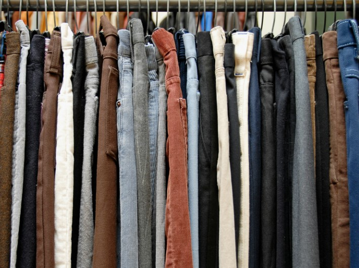
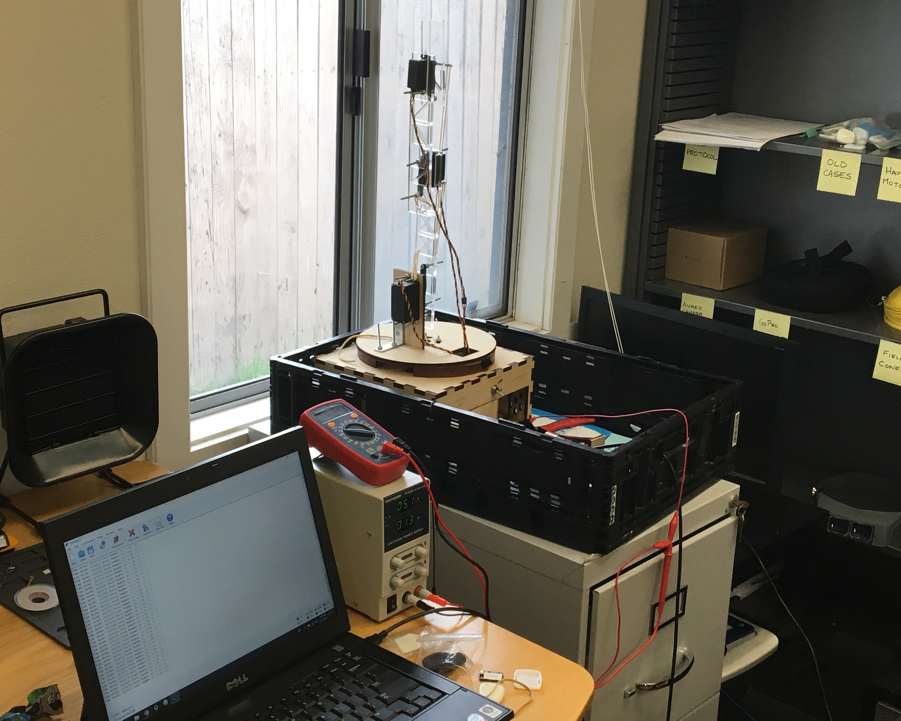

Coding came to me as part of an ongoing quest to turn my ideas into something real. I have had the pleasure to work with some awesome teams and companies on the side while pursuing a career in robotics. I am always looking to learn something new to improve my coding skills. Examples shown reflect my work up to 2020 and are NOT robotics related.
Languages
speak fluently
- Python
- SQL
- HTML5
- CSS
- Sass
working proficiently
Dev Tools
- GitHub
- Codepen
- Git Bash
- Bootstrap
- VS Code
Applications
- Excel
- PowerPoint
- Salesforce CRM
- Notepad
Supply Chain
Data Analysis

Working with a Fortune 500 garment company, my team was tasked to provide an analysis on a critical key performance indicator to help reduce the minimum order quantity purchased from their suppliers.
Machine Learning Modeling
- Devised a Python script to data clean and mine the Excel datasets (~10,000 rows) to simplify the modelling process.
- Programmed a machine learning model in R that reduces the lead time error between the estimated lead time and an actual lead time by 33%.
- Presented to the Global Supply Chain Department on findings and possible implications that could validate the key performance indicator and save the company millions of dollars.
Client was a local Bay Area railroad shipping company looking to update/ redo their recording keeping system, primarily shifting from MS Excel spreadsheets to MS Access/ SQL-based database.
Commercial Data System
- Developed working MS Access database from scratch
- Devised SQL queries for worker scheduling and optimal train routes to reduce idle time
- Facilitated development in entity relational diagram to restructure company's original Spreadsheet system

Active Track was a partner project between the UCB/ UCSF Ergonomics Program and SwiftMotion. This project focused on improving the typically sedentary lifestyle of office workers using a device. This partnership focused on developing as well as validating the startup's (SwiftMotion) product.
ActiveTrack
- Designed, fabricated, and programmed a robot arm to test the accuracy of the Active Track device over a 12 hour period.
- Wrote Python script to analyze robot arm data (~ 1,000,000 data points), generate .csv files, and upload to Google Sheets to automate the device validation process.
- Collected and examined device datasets to compare ActiveTrack against other commercially avaialble devices and Motion Video Task Analysis (MVTA)
As an intern at Yapstone Inc., I worked with the Sales and Marketing team to find and validate sales leads as well as aid in the migration of the company's Salesforce instance to Salesforce Lightning.
Sales and Operation Intern
- Developed Apex code to simplify lead conversion process for company
- Built a web scraper using Python, BeautifulSoup, and Selenium to obtain critical data on prospective leads.
- Programmed a Python script to compile, clean, and validate scrapped data into a list of high value, likely to convert to client leads.
- Created a Python GUI using Tkinter for Sales and Marketing team with above mentioned scraping and validating tools.